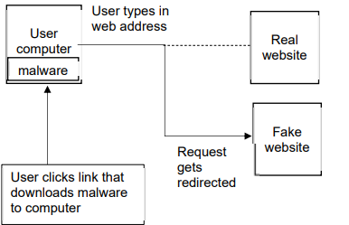
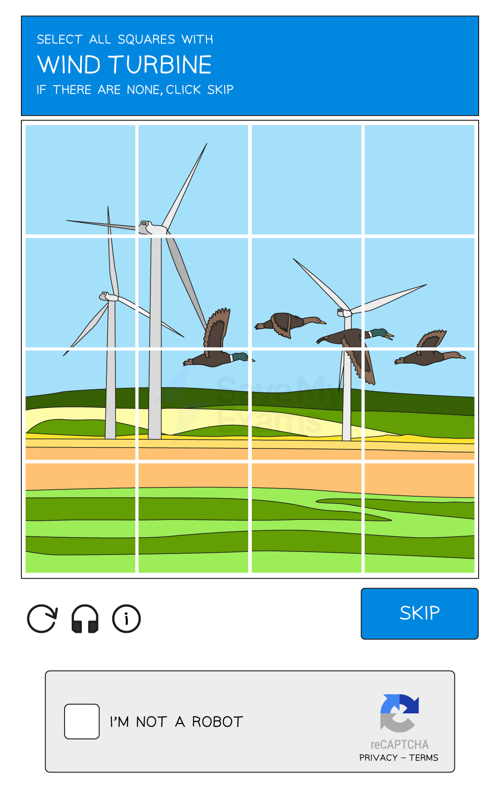

Cyber Security Threats
Forms of cyber security threat
- Computers face a variety of forms of attack and they can cause a large number of issues for a network and computers
- The main threats posed are:
- Brute-force attacks
- Data interception & theft
- DDos attack
- Hacking
- Malware
- Pharming
- Phishing
- Social engineering
Brute Force Attack
What is a brute-force attack?
- A brute force attack works by an attacker repeatedly trying multiple combinations of a user’s password to try and gain unauthorised access to their accounts or devices
- An example of this attack would be an attacker finding out the length of a PIN code, for example, 4-digits
- They would then try each possible combination until the pin was cracked, for example
- 0000
- 0001
- 0002
- A second form of this attack, commonly used for passwords is a dictionary attack
- This method tries popular words or phrases for passwords to guess the password as quickly as possible
- Popular words and phrases such as ’ password ', ’ 1234 ’ and ’ qwerty ’ will be checked extremely quickly.
Data interception
What is data interception & theft?
- Data interception and theft is when thieves or hackers cancompromise usernames and passwords as well as other sensitive data
- This is done by using devices such as a packet sniffer
- A packet sniffer will be able to collect the data that is being transferred on a network
- A thief can use this data to gain unauthorised access to websites, companies and more
DDoS Attack
What is a DDoS attack?
- A Distributed Denial of Service Attack (DDoS attac k) is a large scale, coordinated attack designed to slow down a server to the point of it becoming unusable
- A server is continually flooded with requests from multiple distributed devices preventing genuine users from accessing or using a service
- A DDoS attack uses computers as ’ bots ', the bots act as automated tools under the attackers control, making it difficult to trace back to the original source
- A DDoS attack can result in companies losing money and not being able to carry out their daily duties
- A DDoS attack can cause damage to a company’s reputation
Hacking
What is hacking?
- Hacking is the process of identifying and exploiting weaknesses in a computer system or network to gain unauthorised access
- Access can be for various malicious purposes, such as stealing data, installing malware, or disrupting operations
- Hackers seek out opportunities that make this possible, this includes:
- Unpatched software
- Out-of-date anti-malware
Malware
What is malware?
- Malware (mal icious soft ware) is the term used for any software that has been created with malicious intent to cause harm to a computer system
- Examples of issues caused by malware include
- Files being deleted, corrupted or encrypted
- Internet connection becoming slow or unusable
- Computer crashing or shutting down
- There are various types of malware and each has slightly different issues which they cause
| Malware | What it Does |
|---|---|
| Virus | • Contains code that will replicate and cause unwanted and unexpected events to occur • Examples of issues a user may experience are • Corrupt files • Delete data • Prevent applications from running correctly |
| Worms | • Very similar to viruses, main difference being that they spread to other drives and computers on the network • Worms can infect other computers from • Infected websites • Instant message services • Network connection |
| Trojan | • Sometimes called a Trojan Horse • Trojans disguise themselves as l egitimate software but contain malicious code in the background |
| Spyware | • Allow a person to spy on the users’ activities on their devices • Embedded into other software such as games or programs that have been downloaded from illegitimate sources • Can record your screen, log your keystrokes to gain access to passwords and more |
| Adware | • Displays adverts to the user • Users have little or no control over the frequency or type of ads • Can redirect clicks to unsafe sites that contain spyware |
| Ransomware | • Locks your computer or device and encrypts your documents and other important files • A demand is made for money to receive the password that will allow the user to decrypt the files • No guarantee paying the ransom will result in the user getting their data back |
Pharming
What is pharming?
- Pharming is typing a website address into a browser and it being redirected to a ‘fake’ website in order to trick a user into typing in sensitive information such as passwords
- An attacker attempts to alter DNS settings, the directory of websites and their matching IP addresses that is used to access websites on the internet or change a users browser settings
- A user clicks a link which downloads malware
- The user types in a web address which is then redirected to the fake website

How can you protect against it?
- To protect against the threat of pharming:
- Keep anti-malware software up to date
- Check URLs regularly
- Make sure the padlock icon is visible
Phishing
What is phishing?
- Phishing is the process of sending fraudulent emails/SMS to a large number of people, claiming to be from a reputable company or trusted source
- Phishing is an attempt to try and gain access to your details, often by coaxing the user to click on a login button/link
A company is concerned about a distributed denial of service (DDoS) attack.
(i) Describe what is meant by a DDoS attack.
[4]
(ii) Suggest one security device that can be used to help prevent a DDoS attack.[1]
Answers
(i) Any four from:
- multiple computers are used as bots
- designed to deny people access to a website
- a large number / numerous requests are sent (to a server) …
- … all at the same time
- the server is unable to respond / struggles to respond to all the requests
- the server fails / times out as a result.
(ii)
- firewall OR proxy server
Keeping Data Safe
Access Levels
What are access levels?
- Access levels ensure users of a network can access what they need to access and do not have access to information/resources they shouldn’t
- Users can have designated roles on a network
- Access levels can be set based on a user’s role, responsibility, or clearance level
- Full access - this allows the user to open, create, edit & delete files
- Read-only access - this only allows the user to open files without editing or deleting
- No access - this hides the file from the user
- Some examples of different levels of access to a school network could include:
- Administrators: Unrestricted - Can access all areas of the network
- Teaching Staff: Partially restricted - Can access all student data but cannot access other staff members’ data
- Students: Restricted - Can only access their own data and files
- Users and groups of users can be given specific file permissions
Anti Malware
What is anti-malware software?
- Anti-malware software is a term used to describe a combination of different software to prevent computers from being susceptible to viruses and other malicious software
- The different software anti-malware includes are
- Anti-virus
- Anti-spam
- Anti-spyware
How does anti-malware work?
- Anti-malware scans through email attachments, websites and downloaded files to search for issues
- Anti-malware software has a list of known malware signatures to block immediately if they try to access your device in any way
- Anti-malware will also perform checks for updates to ensure the database of known issues is up to date
Authentication
What is authentication?
- Authentication is the process of ensuring that a system is secure by asking the user to complete tasks to prove they are an authorised user of the system
- Authentication is done because bots can submit data in online forms
- Authentication can be done in several ways, these include
- Usernames and passwords
- Multi-factor authentication
- CAPTCHA - see example below

Biometrics
- Biometrics use biological data for authentication by identifying unique physical characteristics of a human such as fingerprints, facial recognition, or iris scans
- Biometric authentication is more secure than using passwords as:
- A biometric password cannot be guessed
- It is very difficult to fake a biometric password
- A biometric password cannot be recorded by spyware
- A perpetrator cannot shoulder surf to see a biometric password
Automating Software Updates
What are automatic software updates?
- Automatic software updates take away the need for a user to remember to keep software updated and reduce the risk of software flaws/vulnerabilities being targeted in out of date software
- Automatic updates ensure fast deployment of updates as they release
Communication
What is communication?
- One way of protecting data is by monitoring digital communication to check for errors in the spelling and grammar or tone of the communication
- Phishing scams often involve communication with users, monitoring it can be effective as:
- Rushed - emails and texts pretending to be from a reputable company are focused on quantity rather than quality and often contain basic spelling and grammar errors
- Urgency - emails using a tone that creates panic or makes a user feel rushed is often a sign that something is suspicious
- Professionalism - emails from reputable companies should have flawless spelling and grammar
URL
How to check a URL?
- Checking the URL attached to a link is another way to prevent phishing attacks
- Hackers often use fake URLs to trick users into visiting fraudulent websites
- e.g. http://amaz.on.co.uk/ rather than http://amazon.co.uk/
- If you are unsure, always check the website URL before clicking any links contained in an email
Firewalls
What is a firewall?
- A firewall monitors incoming and outgoing network traffic and uses a set of rules to determine which traffic to allow
- A firewall prevents unwanted traffic from entering a network by filtering requests to ensure they are legitimate
- It can be both hardware and software and they are often used together to provide stronger security to a network
- Hardware firewalls will protect the whole network and prevent unauthorised traffic
- Software firewalls will protect the individual devices on the network, monitoring the data going to and from each computer
What form of attack would this prevent?
-
Hackers
-
Malware
-
Unauthorised access to a network
-
Privacy settings are used to control the amount of personal information that is shared online
-
They are an important measure to prevent identity theft and other forms of online fraud
-
Users should regularly review their privacy settings and adjust them as needed
Proxy Servers
What is a proxy server?
- A proxy-server is used to hide a user’s IP address and location, making it more difficult for hackers to track them
- They act as a firewall and can also be used to filter web traffic by setting criteria for traffic
- Malicious content is blocked and a warning message can be sent to the user
- Proxy-servers are a useful security measure for protecting against external security threats as it can direct traffic away from the server
SSL
What is SSL?
- Secure Socket Layer (SSL) is a security protocol which is used to encrypt data transmitted over the internet
- This helps to prevent eavesdropping and other forms of interception
- SSL is widely used to protect online transactions, such as those involving credit card information or other sensitive data
- It works by sending a digital certificate to the user’s browser
- This contains the public key which can be used for authentication
- Once the certificate is authenticated, the transaction will begin
(i) ) Identify a security solution that could be used to protect a computer from a computer virus, hacking and spyware.
Each security solution must be different
| Threat | Security solution |
|---|---|
| Computer virus | |
| Hacking | |
| Spyware | |
| [3] |
(ii) Describe how each security solution you identified in (i) will help protect the computer.
[6]
Answers
(i)
| Threat | Security solution |
|---|---|
| Computer virus | Anti-malware/virus (software) Firewall |
| Hacking | Firewall Passwords Biometrics Two-step verification |
| Spyware | Anti-malware/virus (software) Two-step verification Firewall |
(ii) Two marks for each description
- Anti-malware/virus (software)
- Scans the computer system (for viruses)
- Has a record of known viruses
- Removes/quarantines any viruses that are found
- Checks data before it is downloaded
- … and stops download if virus found/warns user may contain virus
- Anti-malware/spyware (software)
- Scans the computer for spyware
- Removes/quarantines any spyware that is found
- Can prevent spyware being downloaded
- Firewall
- Monitors traffic coming into and out of the computer system
- Checks that the traffic meets any criteria/rules set
- Blocks any traffic that does not meet the criteria/rules set // set blacklist/whitelist
- Passwords
- Making a password stronger // by example
- Changing it regularly
- Lock out after set number of attempts // stops brute force attacks // makes it more difficult to guess
- Biometrics
- Two-step verification
- Extra data is sent to device, pre-set by user
- … making it more difficult for hacker to obtain it
- Data has to be entered into the same system
- … so if attempted from a remote location, it will not be accepted